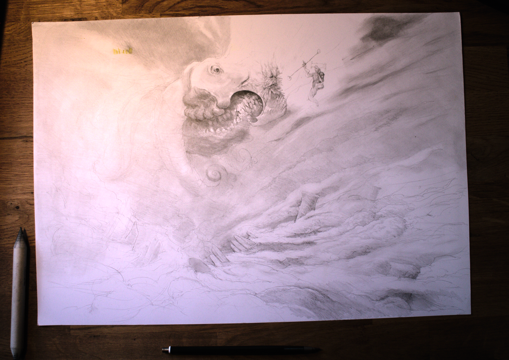

In autumn 2024, while organising some of my papers and art supplies, I found an incomplete drawing I had started a few years earlier.
It was a drawing I had just spontaneously started after building a new desk, but didn’t finish, because I didn’t know how.

The drawing, being unfinished, represented the potential to become a whole variety of finished pieces. I didn’t trust myself to do justice to it, so I left it, and had forgotten about it for years.
Finishing projects has been a persistent challenge for me, as it is for many creatives who share my personality type. I get attached to ideas. And ideas have this annoying property, where they can be many things at once. They morph according to mood and preference, always fresh and alluring. But to exist, they must gain a definitive form. And that means sacrificing a lot of the potential, which feels quite painful to someone like me, with their head in the clouds.
I decided to make the drawing a spiritual successor to my Heart of the World} series. In honor of its nameless beast, I called the drawing Name of the World.

“A message heeded by those selected few. Where no one looks, they’ll be found. Let them gaze. Only there can they be turned. In their abode, deep below, kept dark, for fear of the nameless.”
- Name of the World
Finding the drawing again was an opportunity for me to work on not only the drawing itself, but my ability to finish projects in general. So while drawing, I meditated a lot on my fear of failure and of lost potential. It was an exercise in being decisive. Hesitation is defeat.
I recorded a good chunk of the drawing process and created a process video. In it, I also talk more in depth about my initial thoughts on finishing projects.